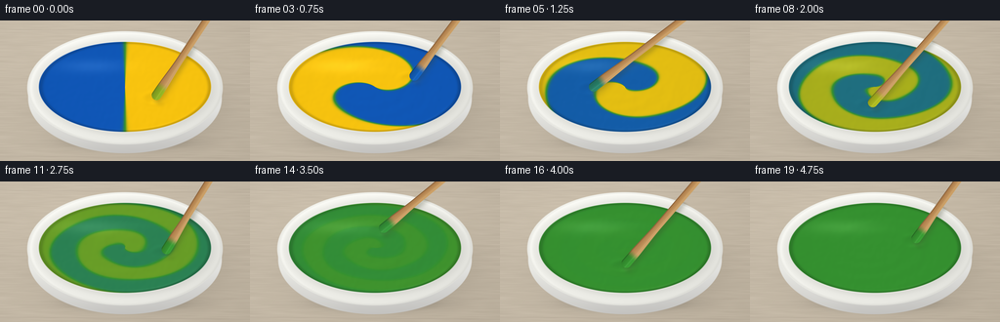
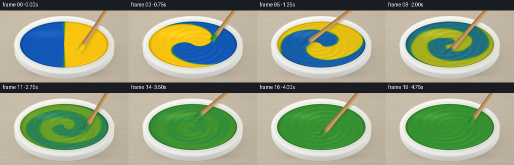
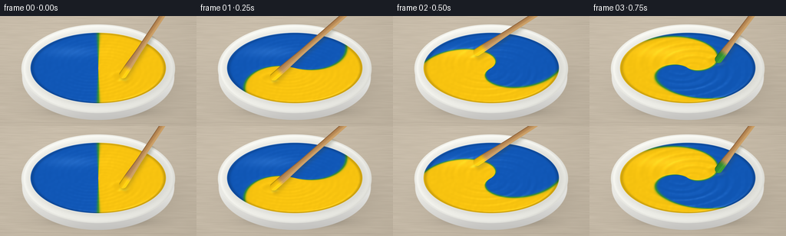

CODING AGENTS AS PIXEL WORLD MODELS
traex/GPT-6.1-Sol · material_0000
点击播放 · 原生 RGB 像素
逐轮保存的候选
回放视频、检查图与代码变化。
每份候选均可单独播放。实际图片检查记录在下方工具轨迹中。
候选 01播放与检查图
点击播放 · 原生 RGB 像素

展开代码变化
--- 上一保存版本 +++ 本次保存版本 @@ -0,0 +1,194 @@ +from pathlib import Path +import numpy as np +from PIL import Image, ImageFilter +from scipy.ndimage import gaussian_filter +import artifact_io + + +ROOT = Path(__file__).resolve().parent +W, H, SCALE = 256, 144, 3 +Y, X = np.mgrid[0:H*SCALE, 0:W*SCALE].astype(float) +X = (X + .5) / SCALE +Y = (Y + .5) / SCALE +rng = np.random.default_rng(18) + + +def smooth(a, b, x): + q = np.clip((x-a)/(b-a), 0, 1) + return q*q*(3-2*q) + + +def composite(im, color, alpha): + a = np.clip(alpha, 0, 1)[..., None] + return im*(1-a) + np.asarray(color)*a + + +def ellipse(cx, cy, rx, ry): + return np.sqrt(((X-cx)/rx)**2 + ((Y-cy)/ry)**2) + + +def base_scene(): + # A warm, lightly grained studio worktop, lit by a broad window at left. + grain = gaussian_filter(rng.normal(size=X.shape), (1.0, 20.0)) + grain /= grain.std() + fine = gaussian_filter(rng.normal(size=X.shape), .6) + brightness = -8*(X/W) + 4*(1-Y/H) + 1.5*grain + .45*fine + im = np.stack([202+brightness, 190+brightness, 171+brightness], axis=-1) + for yy in [9, 139]: + line = np.exp(-((Y-yy-.009*X)/.38)**2) + im -= line[..., None]*np.array([9, 9, 8]) + shadow = np.exp(-(((X-136)/102)**2 + ((Y-94)/45)**2)*2.0) + im = composite(im, [66, 61, 52], shadow*.38) + contact = np.exp(-(((X-133)/76)**2 + ((Y-125)/9)**2)*2) + im = composite(im, [56, 53, 47], contact*.37) + + # The front wall of a round white ceramic mixing dish. + side = ellipse(128, 80, 99, 56) + mask = 1-smooth(.996, 1.007, side) + shade = np.clip((Y-90)/47, 0, 1) + sidecol = np.stack([237-37*shade-8*(X/W), + 237-38*shade-8*(X/W), + 232-37*shade-6*(X/W)], -1) + sidecol += (4*np.exp(-((X-73)/29)**2))[..., None] + im = composite(im, sidecol, mask) + + # Rounded ceramic lip with a softly shaded concave inner wall. + outer = ellipse(128, 69, 100, 58) + lipmask = 1-smooth(.996, 1.006, outer) + light = 7*(-(X-128)/100-(Y-69)/58) + inner = ellipse(128, 68, 91, 49) + inner_shadow = np.exp(-((inner-.974)/.072)**2)*13 + edge = np.exp(-((outer-.989)/.016)**2)*9 + col = np.stack([242+light-inner_shadow-edge, + 242+light-inner_shadow-edge, + 236+light-inner_shadow-edge], -1) + im = composite(im, col, lipmask) + # A crisp rim highlight, strongest on the light-facing arc. + highlight = np.exp(-((outer-.961)/.014)**2) + highlight *= np.clip(.45-(Y-69)/80-(X-128)/230, 0, .9) + im = composite(im, [255, 255, 250], highlight*.65) + return im + + +BASE = base_scene() +u = (X-128)/88 +v = (Y-68)/46 +r = np.sqrt(u*u+v*v) +theta = np.arctan2(v, u) +paint_mask = 1-smooth(.996, 1.008, r) +noise = gaussian_filter(rng.normal(size=X.shape), 5) +noise /= noise.std() + + +def paint(t, tip): + progress = t/4.75 + # Differential angular advection turns the two equal semicircular amounts + # into folded spiral ribbons. Diffusion gradually eliminates all contrast. + turns = 15.5*(progress**.88) + phase = theta - turns*(1-r**1.20) - 3.4*t + phase += .11*np.sin(5*theta+9*r-2*t)*smooth(0, .2, progress) + concentration = np.tanh(np.cos(phase)/(0.028+progress**1.2*.38)) + fading = 1-smooth(.13, .91, progress) + pigment = .5 + .5*concentration*fading + # Pigment mixing (yellow + blue -> green), rather than RGB averaging. + yellow = np.array([249., 196., 15.]) + blue = np.array([16., 87., 183.]) + green = np.array([53., 145., 48.]) + yellow_weight = np.maximum(2*pigment-1, 0)**1.4 + blue_weight = np.maximum(1-2*pigment, 0)**1.4 + colors = (green[None,None,:] + yellow_weight[...,None]*(yellow-green) + + blue_weight[...,None]*(blue-green)) + + # Small viscous ridges follow the pigment's curved ribbons. + ribbon = np.exp(-((np.cos(phase))/.15)**2) + annular = np.sin(25*r - 3*theta-5*t)*np.exp(-((r-.53)/.39)**2) + height = .0038*ribbon*fading + .0018*annular*smooth(0,.2,progress) + height += .00065*noise + pu, pv = (tip[0]-128)/88, (tip[1]-68)/46 + d = np.sqrt((u-pu)**2+(v-pv)**2) + height += -.014*np.exp(-(d/.090)**2) + .007*np.exp(-((d-.128)/.05)**2) + # The surface rolls under the stirring blade and rises along the bowl wall. + height += .009*np.exp(-((r-.978)/.026)**2) + hy, hx = np.gradient(height, 1/(46*SCALE), 1/(88*SCALE)) + nx, ny, nz = -hx, -hy, np.ones_like(hx) + norm = np.sqrt(nx*nx+ny*ny+1) + nx, ny, nz = nx/norm, ny/norm, nz/norm + diffuse = np.clip(-.34*nx-.48*ny+.81*nz, 0, 1) + colors *= (.82+.22*diffuse)[...,None] + # Broad soft-box reflections, with narrow glints on the paint ridges. + glint = np.clip(-.13*nx-.30*ny+.945*nz, 0, 1)**75 + broad = np.exp(-(((u+.39)/.58)**2+((v+.46)/.22)**2)*2.2) + colors += (8*glint + 16*broad)[...,None]*np.array([1.,1.,.88]) + rimdark = np.exp(-((r-.983)/.024)**2)*.16 + colors *= (1-rimdark)[...,None] + return np.clip(colors, 0, 255), pigment + + +def stick(im, tip, top, t, pigment): + px, py = tip + tx, ty = top + dx, dy = px-tx, py-ty + length = np.hypot(dx, dy) + ax, ay = dx/length, dy/length + along = (X-tx)*ax + (Y-ty)*ay + cross = (X-tx)*(-ay)+(Y-ty)*ax + width = 3.6 + 1.35*smooth(length*.59, length*.93, along) + # Rounded wooden stirring paddle, seen diagonally from overhead. + beyond = np.maximum(-along, np.maximum(along-length+4.0, 0)) + dist = np.sqrt(cross*cross+beyond*beyond) + mask = 1-smooth(width-.15, width+.18, dist) + # Shadow from the raised shaft falls onto the paint and rim. + shadow_cross = (X-tx-2.3)*(-ay)+(Y-ty-3.7)*ax + shadow_along = (X-tx-2.3)*ax+(Y-ty-3.7)*ay + shadow = np.exp(-(shadow_cross/(width+2.0))**2*1.8) + shadow *= smooth(0, 10, shadow_along)*(1-smooth(length-3,length+4,shadow_along)) + shadow *= 1-smooth(1.01,1.06,ellipse(128,69,99,57)) + im = composite(im, [58, 61, 38], shadow*.24) + + # Fine longitudinal wood fibres, beveled sides and a varnished highlight. + fiber = np.sin(cross*8+1.7*np.sin(along*.08)) + fiber += .65*np.sin(cross*20+along*.021) + bevel = np.clip(cross/width, -1, 1) + color = np.stack([190+7*fiber-20*bevel, + 143+5*fiber-24*bevel, + 89+3*fiber-19*bevel], -1) + color += (7*np.exp(-((cross+width*.45)/.7)**2))[...,None] + wet = smooth(length-19, length-10, along) + pp = .5+.5*(1-smooth(.13,.91,t/4.75))*np.cos(2.5*t+1) + green = np.array([53.,145.,48.]) + paintcol = green + max(2*pp-1,0)**1.4*(np.array([249,196,15])-green) + paintcol += max(1-2*pp,0)**1.4*(np.array([16,87,183])-green) + coating = np.broadcast_to(paintcol, color.shape).copy() + coating *= (1-.13*bevel)[...,None] + coating += (12*np.exp(-((cross+1.7)/.65)**2))[...,None] + color = color*(1-wet[...,None])+coating*wet[...,None] + # A faint dark edge makes the wooden thickness legible. + edge = np.exp(-((cross-width+.4)/.45)**2) + color *= (1-.22*edge)[...,None] + im = composite(im, color, mask) + return im + + +def render(t): + # Six energetic stirring revolutions, then a slight slowing at the end. + angle = .65 + 2*np.pi*(1.13*t-.023*t*t) + radius = .43 + .045*np.sin(t*3) + tip = (128+88*radius*np.cos(angle), 68+46*radius*np.sin(angle)) + top = (217+9*np.cos(angle+.4), -18+4*np.sin(angle)) + color, pigment = paint(t, tip) + im = composite(BASE.copy(), color, paint_mask) + im = stick(im, tip, top, t, pigment) + # Restrained optical vignette and downsampling provide clean subpixel edges. + vignette = 1-.047*((X-128)/165)**2-.027*((Y-67)/120)**2 + im *= vignette[...,None] + image = Image.fromarray(np.uint8(np.clip(im,0,255))) + return np.asarray(image.resize((W,H), Image.Resampling.LANCZOS)) + + +def main(): + frames = np.stack([render(i/4) for i in range(20)]) + artifact_io.save(frames, ROOT) + + +if __name__ == '__main__': + main()
候选 02播放与检查图
点击播放 · 原生 RGB 像素


展开代码变化
--- 上一保存版本
+++ 本次保存版本
@@ -101,8 +101,10 @@
# Small viscous ridges follow the pigment's curved ribbons.
ribbon = np.exp(-((np.cos(phase))/.15)**2)
- annular = np.sin(25*r - 3*theta-5*t)*np.exp(-((r-.53)/.39)**2)
- height = .0038*ribbon*fading + .0018*annular*smooth(0,.2,progress)
+ annular = np.sin(35*r - 4*theta-5*t+.45*np.sin(9*r+theta))
+ annular *= np.exp(-((r-.53)/.39)**2)
+ height = .006*ribbon*fading + .0045*annular*smooth(0,.2,progress)
+ height += .0009*np.sin(67*r-7*theta-7*t)*np.exp(-((r-.55)/.4)**2)
height += .00065*noise
pu, pv = (tip[0]-128)/88, (tip[1]-68)/46
d = np.sqrt((u-pu)**2+(v-pv)**2)
@@ -116,9 +118,9 @@
diffuse = np.clip(-.34*nx-.48*ny+.81*nz, 0, 1)
colors *= (.82+.22*diffuse)[...,None]
# Broad soft-box reflections, with narrow glints on the paint ridges.
- glint = np.clip(-.13*nx-.30*ny+.945*nz, 0, 1)**75
+ glint = np.clip(-.13*nx-.30*ny+.945*nz, 0, 1)**55
broad = np.exp(-(((u+.39)/.58)**2+((v+.46)/.22)**2)*2.2)
- colors += (8*glint + 16*broad)[...,None]*np.array([1.,1.,.88])
+ colors += (25*glint + 16*broad)[...,None]*np.array([1.,1.,.88])
rimdark = np.exp(-((r-.983)/.024)**2)*.16
colors *= (1-rimdark)[...,None]
return np.clip(colors, 0, 255), pigment
@@ -154,7 +156,8 @@
89+3*fiber-19*bevel], -1)
color += (7*np.exp(-((cross+width*.45)/.7)**2))[...,None]
wet = smooth(length-19, length-10, along)
- pp = .5+.5*(1-smooth(.13,.91,t/4.75))*np.cos(2.5*t+1)
+ pp = pigment[int(np.clip(py*SCALE,0,H*SCALE-1)),
+ int(np.clip(px*SCALE,0,W*SCALE-1))]
green = np.array([53.,145.,48.])
paintcol = green + max(2*pp-1,0)**1.4*(np.array([249,196,15])-green)
paintcol += max(1-2*pp,0)**1.4*(np.array([16,87,183])-green)
可观测工具轨迹
实际执行的命令与返回图片。
命令 1exit 0
/bin/bash -lc "ls -la && cat prompt.txt && printf '\\n---RULES---\\n' && cat GENERATION_RULES.md && printf '\\n---SPEC---\\n' && cat task_spec.json"
命令 2exit 0
/bin/bash -lc "cat artifact_io.py && python - <<'PY' import importlib.util for x in ['numpy','PIL','scipy']: print(x, bool(importlib.util.find_spec(x))) PY"
命令 3exit 0
/bin/bash -lc 'python generate.py'
命令 4exit 0
/bin/bash -lc "python generate.py && ls -lh pixels.npz index.html inspection.png && python - <<'PY'
import numpy as np
from pathlib import Path
from PIL import Image
p=np.load('pixels.npz')['pixels']
print('Packed video:',p.shape,p.dtype)
files=list(Path('frames').glob('*.png'))
print('Frames:',len(files),'size:',Image.open(files[0]).size,'mode:',Image.open(files[0]).mode)
PY"视觉工具实际返回图片 1

保存候选 2 份；完成命令 4 次；可验证图片返回 1 张。原始 API 响应与完整日志保留在本地。